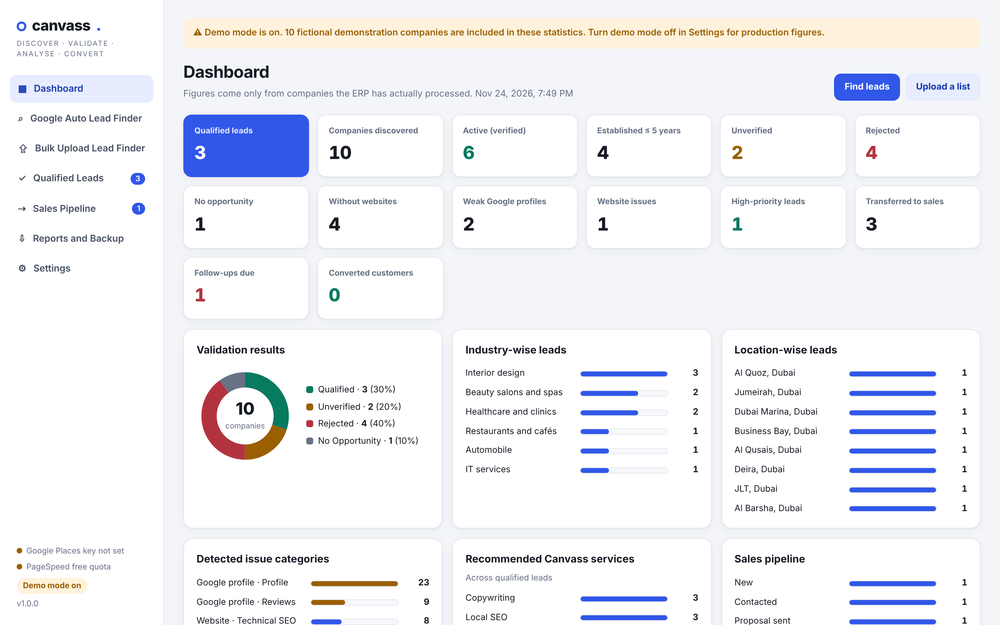
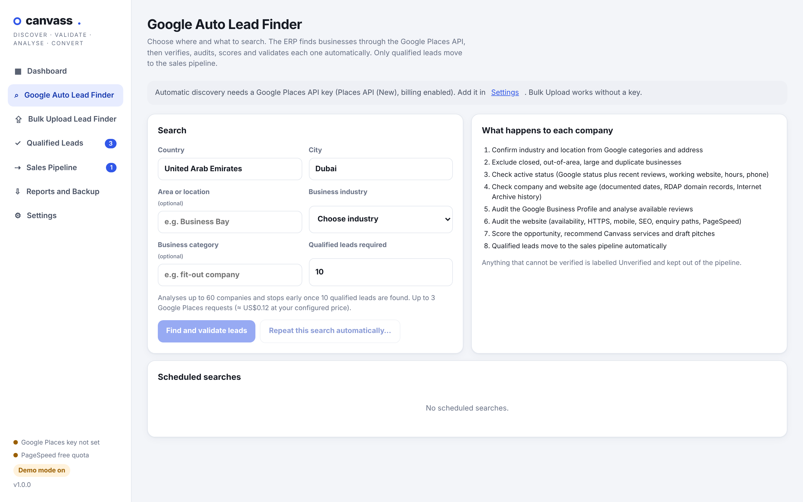
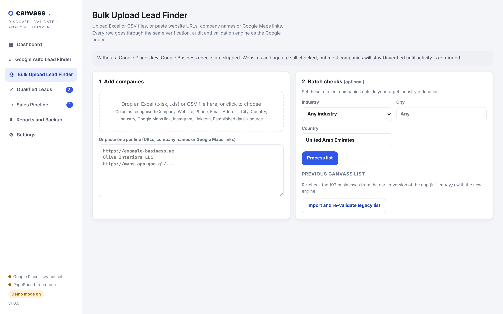
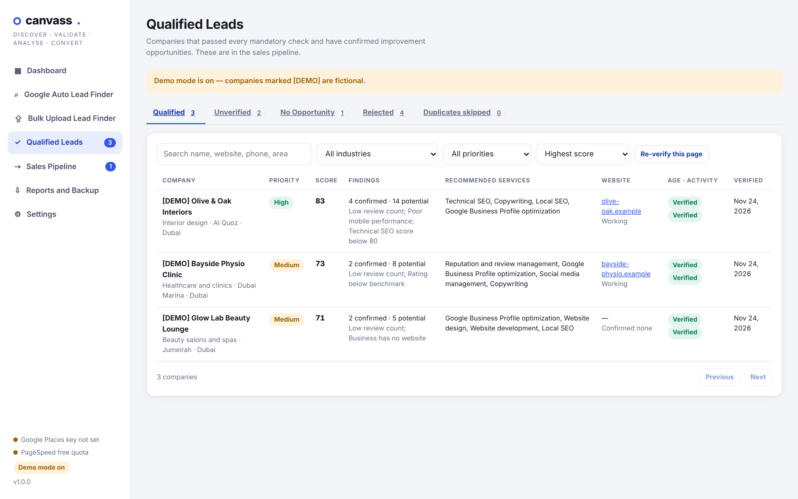
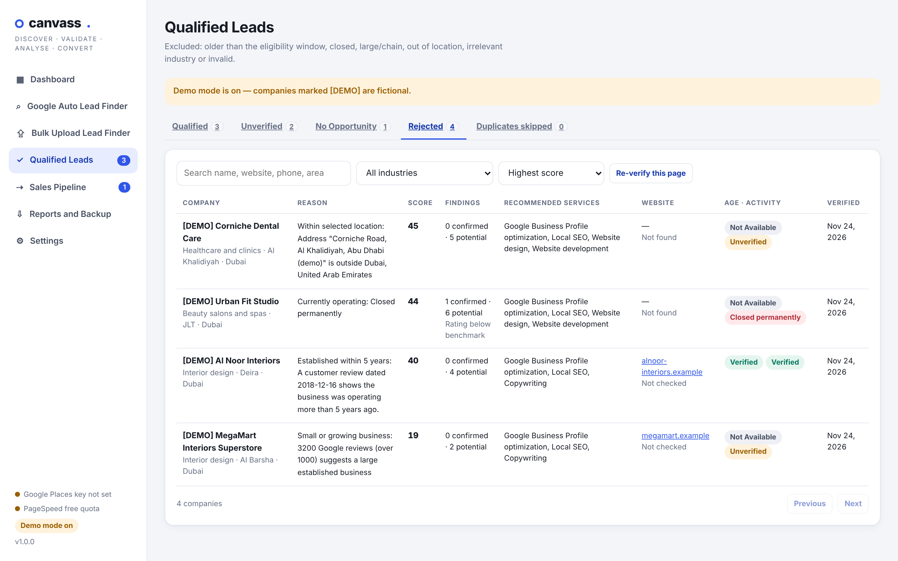
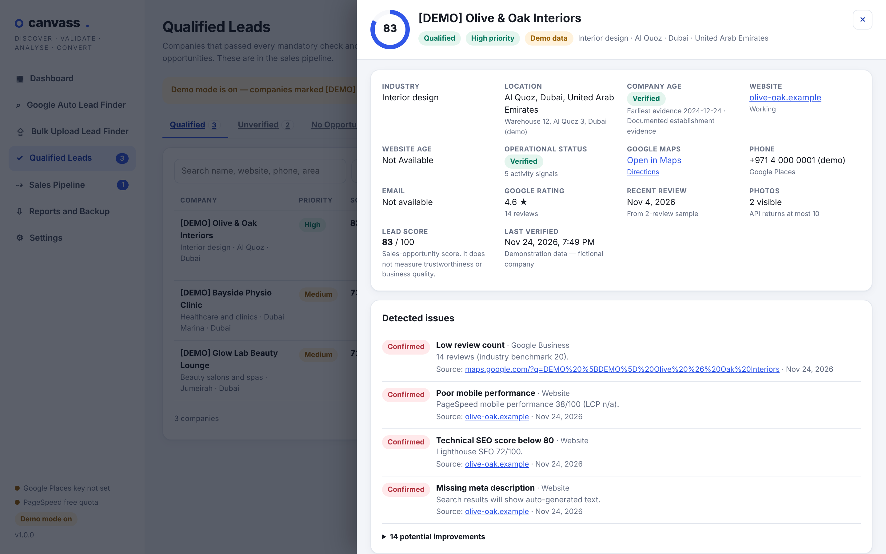
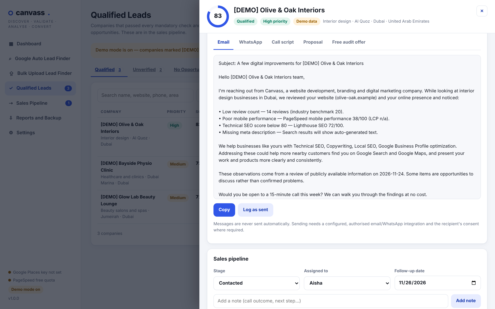
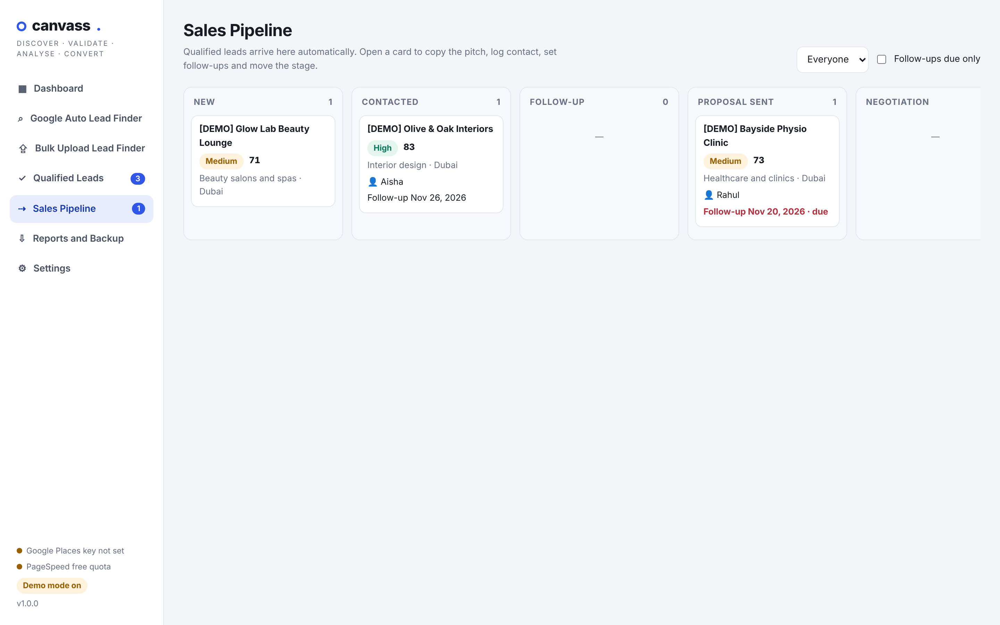
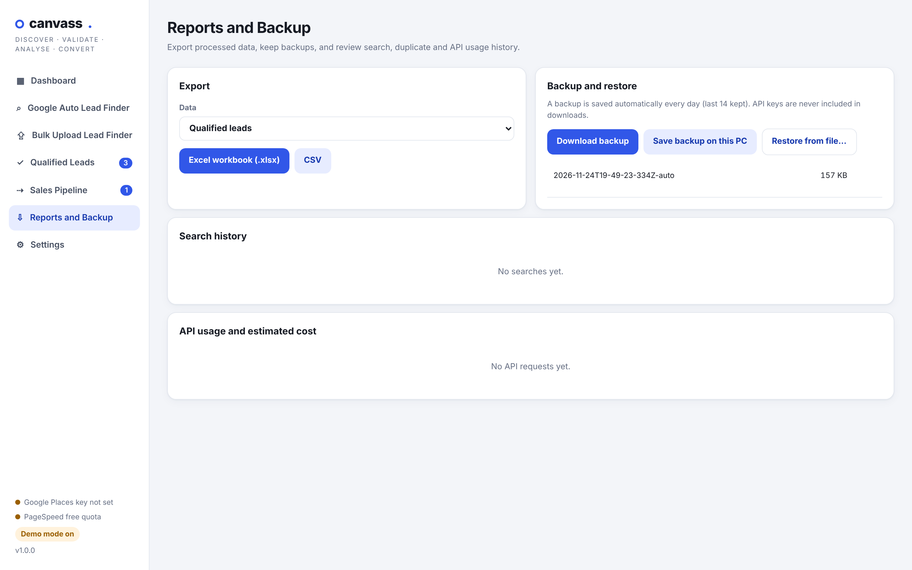
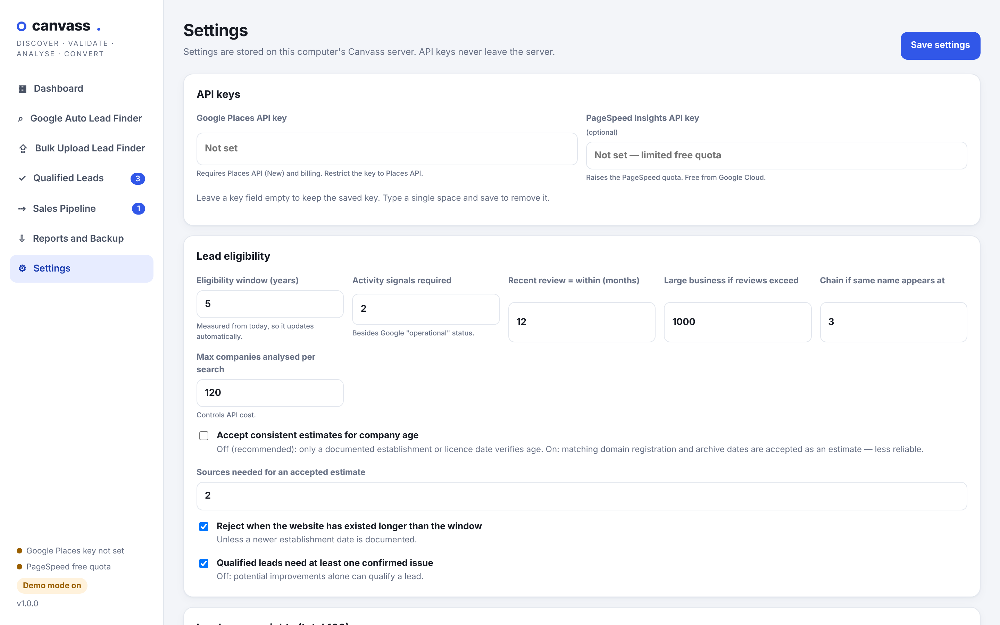

User manual · Version 1.0
The left menu has seven pages: Dashboard, Google Auto Lead Finder, Bulk Upload Lead Finder, Qualified Leads, Sales Pipeline, Reports and Backup, Settings. On phones the menu moves to the top.
Tip: to explore safely first, click Load demo data in Settings. A yellow banner shows whenever demo data is included. Remove it with Remove demo data before real work.

Dashboard with demo data.
The tiles count companies the ERP has actually processed. Click a tile to open the matching list. The charts show validation results, industries, locations, detected issue categories, the services recommended for qualified leads, and how many leads are at each pipeline stage. Follow-ups due turns red when a follow-up date has passed.

Choose the country, city, area (optional), industry, an optional category (for example "fit-out company"), and how many qualified leads you need. The page shows how many companies will be analysed and an estimated Google cost. Click Find and validate leads.
A progress panel shows each company as it's checked. The search stops early once enough qualified leads are found. Click Stop at any time; everything processed so far is kept.
Repeat this search automatically saves it to run daily, weekly or monthly while Canvass is running. Duplicates are skipped every time.

Drop an Excel or CSV file, or paste one item per line: website URLs, company names or Google Maps links. Recognised columns include Company, Website, Phone, Email, Address, City, Country, Industry, Google Maps link, Instagram, LinkedIn, plus Established Date and Established Source (for example a trade licence number). If you provide those last two, companies can be age-verified straight away.
Optional batch checks (industry, city, country) reject rows outside your target. Rows that repeat within the file or match companies already in Canvass are skipped and listed under Duplicates skipped.
Template: samples/DEMO-bulk-upload-template.csv. Import and re-validate legacy list re-checks the 102 businesses from the previous version of the app.
Every company, whether from Google or an upload, goes through the same steps:
| Check | What Canvass looks at | If it fails |
|---|---|---|
| Duplicate | Google Place ID, website domain, phone, name and location, name and domain | Skipped (listed as duplicate) |
| Operating now | Google status plus recent activity (review within 12 months, working website, or team evidence) plus at least 2 signals (hours, phone, map location…) | Closed: Rejected. Not enough evidence: Unverified |
| Genuine business | Google Business listing or team confirmation | Unverified (or Rejected if marked fake) |
| Industry | Google categories and name keywords for the chosen industry | Different industry: Rejected. Unclear: Unverified |
| Location | Address city and country | Elsewhere: Rejected. No address: Unverified |
| Size | Over 1,000 reviews, or a chain (3 or more same-name locations) | Rejected |
| Age (5 years) | Documented licence or registration date; dated reviews; domain registration (RDAP); first web-archive capture | Older: Rejected. Not documented: Unverified |
| Contact | Public phone, email or website | Unverified |
| Opportunity | At least one confirmed issue | No Opportunity |
Why are many automatic finds Unverified? A domain or archive date shows when a website appeared, not when the company was founded. Canvass won't present such estimates as facts. Open the company card and add the trade licence date with its source, and the company is re-validated immediately. If you accept the risk, switch on Accept consistent estimates in Settings.
Age 20 · Active and authentic 25 · Google Business opportunities 25 · Website/SEO opportunities 20 · Contact information 10. High is 80 or more, Medium 60–79, Low below 60. The score measures sales opportunity, not trustworthiness, and it never overrides a failed check.

The Qualified Leads page has a tab for each category, plus Duplicates skipped. Search, filter by industry or priority, and sort. Click any row to open its company card. Re-verify this page runs every check again for the companies shown (this uses API requests).

The Rejected tab shows the exact reason for each company.

The card shows the facts that matter: industry, location, company age with its basis, website and website age, operational status, Maps and Directions links, phone, email, rating, recent review, photos, score, and the last verification date. Every fact shows where it came from.

Every qualified lead gets five drafts: Email, WhatsApp, Call script, Proposal and Free audit offer. They use the company's real findings and the recommended services. They never include invented statistics or guaranteed results, and they include an opt-out line. Always read a draft before sending.
Copy puts the text on your clipboard. After you send it yourself, click Log as sent. The lead moves to Contacted, and Canvass warns you if the same channel was used recently (the default is 14 days). Mark Do not contact when someone opts out. Canvass does not send messages automatically.

Qualified leads arrive in New automatically. Open a card to change the stage (New, Contacted, Follow-up, Proposal sent, Negotiation, Won, Lost), assign a team member, set a follow-up date and add notes. Every change is recorded in the history. Filter by member, or show only follow-ups that are due. Won leads count as converted customers on the Dashboard.


| Section | What you can change |
|---|---|
| API keys | Google Places key (needed for discovery), PageSpeed key (recommended) |
| Lead eligibility | Age window (years), activity signals needed, what counts as a recent review, large-business and chain limits, max companies per search, the estimate option, the old-website rule, whether a confirmed issue is required |
| Score weights | The five score parts and the priority bands |
| Benchmarks | Minimum reviews, rating and photos per industry |
| Your company / Team | Pitch signature; team member names |
| Services / Industries | Turn services on or off; edit industries, Google place types and keywords |
| Data and compliance | Google data retention (30 days or less), links checked per site, parallel processing, contact cooldown, price per 1,000 requests, PageSpeed on or off, Google content in exports |
| Status | Meaning |
|---|---|
| Verified | Confirmed by documented or direct evidence, with a source |
| Estimated | Based on supporting evidence only (for example domain or archive dates). Not proof |
| Unverified | Not enough reliable evidence. Never sent to the pipeline automatically |
| Not Available | The source didn't provide this information |
| Not Applicable | Doesn't apply (for example website age when there is no website) |
| Confirmed Issue | Measured directly (for example "no HTTPS", "no opening hours on Google") |
| Potential Improvement | An opportunity to discuss; not proven to be a problem |